Cherrygrove City
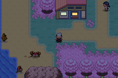
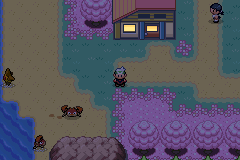
Warm window lighting across 49 town and city maps in Johto, Hoenn, Kanto and Sevii. All added lamps and lanterns have been removed. Existing street fixtures remain in their original locations.
Five-minute review: compare the three scenes below at night and dusk. Judge the window warmth. Doors, menus, battle returns and saves have already been checked automatically.


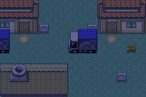
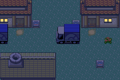
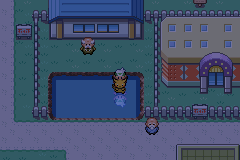
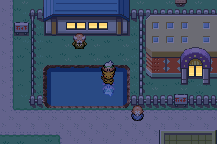
The time control also applies here. The 49-map count includes both Indigo Plateau exteriors, Saffron's connection map, Lake of Rage, Mt. Silver and Safari Zone Gate.
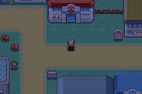
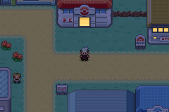
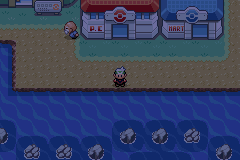
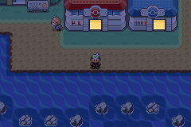
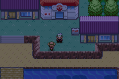
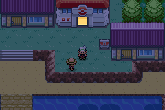
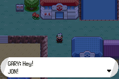
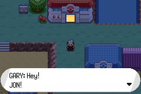
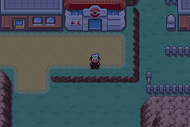
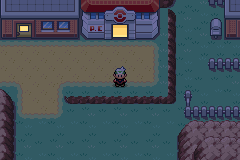
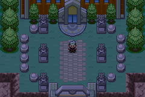
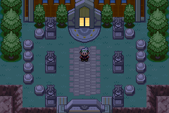
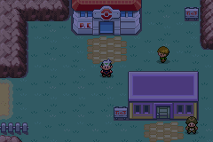
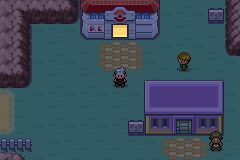

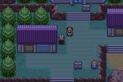
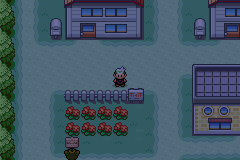
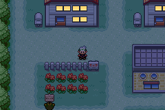
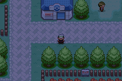
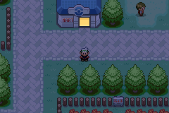

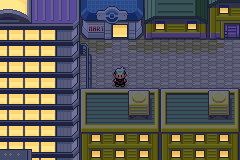
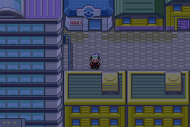

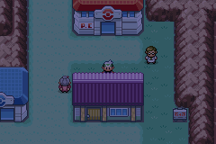
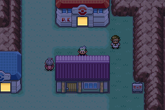
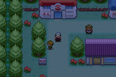
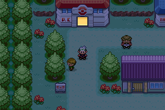
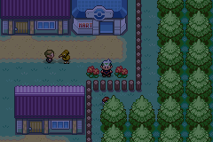
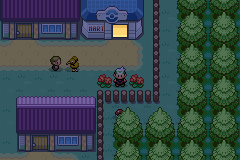
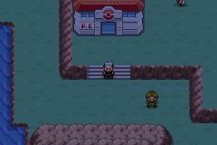
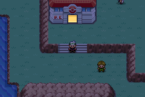
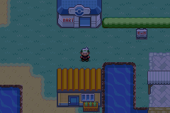
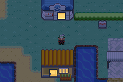
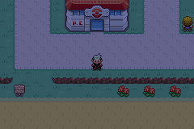
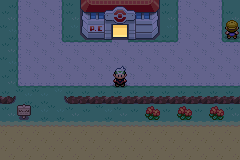
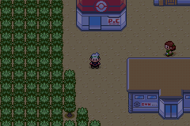
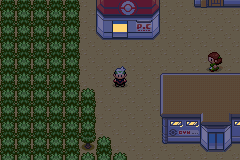
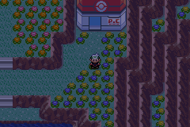
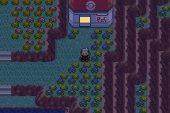
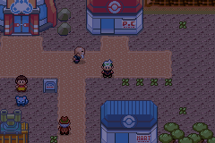
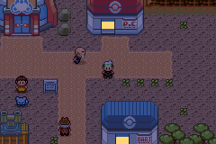
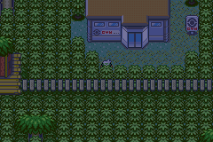
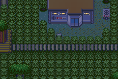
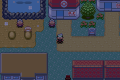
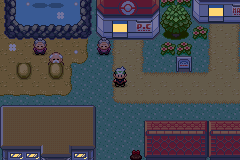
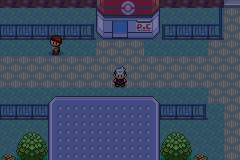

Shared glass colors are isolated from roofs, water and walls before the existing day/night system warms them. Daytime source art, map cells and collision attributes are unchanged. Town tilesets are shared by some surrounding routes, so those routes inherit compatible window lighting.
This is a first coverage pass, not a claim that every decorative pane is lit. Existing unlit panels and special structures remain where their colors cannot safely be shared.
All screenshots are native 240×160 emulator captures with synthetic saves, shown with nearest-neighbor scaling. NPC positions and animation frames may differ between builds; static checks separately verify 35,180 original daytime metatile renderings. Intro props visible in Littleroot belong to the synthetic setup.
636 focused assertions passed, plus 50 full regression suites (1,331 assertions). The National Park test's unsafe manual sprite deletion was corrected; no encounter code changed.
3 delivery assertions also pass on the unpatched playtest ROM. The map-preservation audit is recomputed from the baseline and current source assets whenever this gallery is published.
Capture provenance · Map preservation checks · Full regression result
Tested development ROM: B9401D84AEAB29A4AC87F8443B43ECE6. Disposable capture hooks are absent from the playtest ROM.